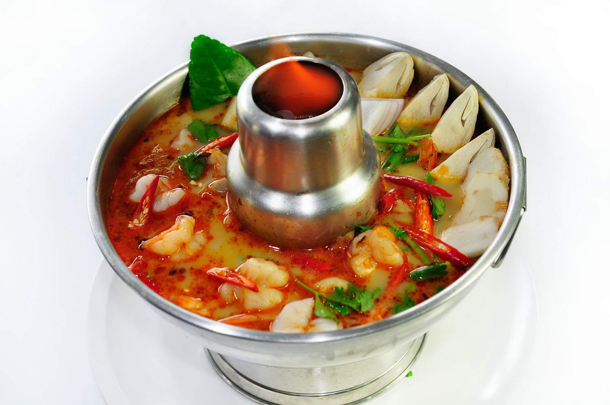

Thai Hotspot Recipes

Description
Hot pot is a delightful communal meal featuring a simmering pot of broth
placed in the center of the table, surrounded by an array of raw and
cooked ingredients for guests to cook themselves. Each guest dips their
choice of bite-sized vegetables and thinly sliced meats into the steaming
broth, which enhances in flavor as the meal progresses. As the broth
simmers and cooks down, it becomes richer, and towards the end of the
meal, it is often ladled over noodles or rice to create a flavorful soup.
Ideal for entertaining, hot pot allows guests to enjoy precisely what they
want while the host is celebrated for the impressive and indulgent spread.
It's also a perfect dish for warming up on a chilly day.
Ingredients
- White button mushroom
- Shiitake mushroom
- Enoki mushroom
- White beech mushroom
- King Trumpet mushroom
- Pumpkin
- Kabocha squash
- Baby corn
- Napa cabbage
- Chrysanthemum Greens (also known as Shingiku, cải cúc, cải tần ô)
- Bok choy
- Pork
- Beef
- Lamb
- Chicken
- Fish
- Shrimp
- Scallops
- Fish cakes
- Squid/cuttlefish/calamari
- Cooked meat/seafood balls (fish, shrimp, beef, or pork)
Directions
- Start with the bulkier items that will require a bit more time cooking. This usually includes starchy vegetables such as pumpkin and corn.
- Meat and other proteins typically come next, then leafy vegetables such as napa cabbage and chrysanthemum greens are last.
- Everyone is in charge of their own cooking, so the golden rule of hot pot is whatever you put in, you have to take out.